정보처리산업기사 (2005-09-04 기출문제)
1과목: 데이터 베이스
1. 학생 테이블에서 학번이 300인 학생의 학년을 3으로 수정하기 위한 SQL 질의어는? 학생(학번, 이름, 학년, 학과)
- UPDATE 학년=3 FROM 학생 WHERE 학번=300;
- UPDATE 학생 SET 학년=3 WHERE 학번=300;
- UPDATE FROM 학생 SET 학년=3 WHERE 학번=300;
- UPDATE 학년=3 SET 학생 WHEN 학번=300;
(정답률: 70%)

2. SQL 검색문의 기본적인 구조로 옳게 짝지어진 것은?
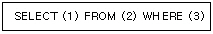
- (1)릴레이션 (2)속성 (3)조건
- (1)조건 (2)릴레이션 (3)튜플
- (1)튜플 (2)릴레이션 (3)조건
- (1)속성 (2)릴레이션 (3)조건
(정답률: 47%)
3. 스택에 데이터를 A,B,C,D 순으로 저장했을 경우, 이들데이터가 출력되는 결과로 가능한 것은?
- D-B-C-A
- C-B-D-A
- C-D-A-B
- D-A-C-B
(정답률: 58%)
4. 데이터 모델의 3요소에 해당하지 않는 것은?
- 제약조건
- 속성
- 구조
- 연산
(정답률: 52%)
5. What do you call in a relational-database a tuple?
- field
- record
- relation
- file
(정답률: 54%)
6. 널 값(null value)에 대한 설명으로 잘못된 것은?
- 정보의 부재를 나타낼 때 사용하는 특수한 데이터 값이다.
- 아직 알려지지 않은 모르는 값이다.
- 해당되지 않는 값이다.
- 영(zero)과 같은 값이다.
(정답률: 79%)
7. 관계 데이터 모델의 설명으로 잘못된 것은?
- 릴레이션(Relation) : 열과 행을 가진 테이블을 말한다.
- 애트리뷰트(Attribute) : 테이블의 의미가 있는 각각의 항목으로 속성을 말한다.
- 도메인(Domain) : 릴레이션의 튜플(Tuple) 수를 말한다.
- 차수(Degree) : 릴레이션의 애트리뷰트(Attribute) 수를 말한다.
(정답률: 73%)
8. 컴퓨터 내의 연산시 숫자 자료를 보수(complement)로 표현하는 이유는?
- 음수를 표현하기 쉽다.
- 실수를 표현하기 쉽다.
- 덧셈과 뺄셈을 덧셈 회로로 처리할 수 있다.
- 수를 표현하는데 저장장치를 절약할 수 있다.
(정답률: 52%)
9. 데이터베이스에서 자료의 중앙 통제시 가장 큰 장점은?
- 데이터베이스 관리자가 필요 없게 된다.
- 저장된 자료의 일관성 유지가 용이하다.
- 데이터의 중복이 전혀 없게 되어 경제적이다.
- 보안에 대한 위협이 없어진다.
(정답률: 68%)
10. fill in the blank of the sentence.if an application programmer wants to create a new type of record or wants to modify an old record by including new data items or by expanding the size of a data item, he must to the () for permission.
- Application program
- Database management system
- Database administrator
- Data definition language
(정답률: 47%)
11. 데이터베이스관리자(DBA)의 역할에 대한 설명으로 거리가 먼 것은?
- 데이터의 저장구조와 접근방법을 결정하는 역할을 한다.
- 시스템의 보안성과 무결성을 검사하는 기능을 결정하는 역할을 한다.
- 응용 프로그램과 데이터베이스 사이에서 중재자로서의 역할을 담당한다.
- 데이터베이스에 대한 백업과 회복을 위한 적절한 방법을 선택하는 역할을 한다.
(정답률: 57%)
12. 이진 검색(binary search) 기법을 적용하기 위한 선행 조건은?
- 자료가 반드시 정렬되어야 한다.
- 자료의 개수가 짝수이어야 한다.
- 자료의 구성은 비순차적이어야 한다.
- 자료의 구성은 홀수, 짝수 순으로 이루어져야 한다.
(정답률: 66%)
13. 관계 데이터 모델에서 릴레이션의 특성에 해당되지 않는 것은?
- 모든 속성값은 원자 값이다.
- 모든 튜플은 서로 다른 값을 갖는다.
- 하나의 릴레이션에서 튜플의 순서는 있다.
- 각 속성은 릴레이션 내에서 유일한 이름을 가진다.
(정답률: 79%)
14. 정렬해야 할 파일이 (5,1,4,3,8,2)인 6개의 키 값을 첫 번째 단계에 3회 수행한 결과가 다음과 같을 때 어떤 정렬기법을 사용하는가?(오류 신고가 접수된 문제입니다. 반드시 정답과 해설을 확인하시기 바랍니다.)
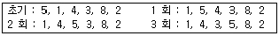
- 삽입 (Insertion Sort)
- 버블 정렬(Bubble Sort)
- 합병 정렬(Merge Sort)
- 히프 정렬(Heap Sort)
(정답률: 47%)
15. 데이터베이스 설계 단계를 차례로 나열한 것은?
- 요구단계→개념적 설계 단계→물리적 설계 단계→논리적 설계 단계
- 요구 분석 단계→개념적 설계 단계→논리적 설계 단계→물리적 설계 단계
- 요구 분석 단계→논리적 설계 단계→개념적 설계 단계→물리적 설계 단계
- 요구 분석 단계→논리적 설계 단계→물리적 설계 단계→개념적 설계 단계
(정답률: 84%)
16. 가장 널리 사용되는 데이터 모델로 개념 세계에서 표현된 각 개체와 개체간의 관계들을 서로 독립된 2차원 테이블(Table) 즉 릴레이션(Relation)으로 표현하는 데이터 모델은?
- 개체형 데이터 모델
- 관계형 데이터 모델
- 계층형 데이터 모델
- 네트워크형 데이터 모델
(정답률: 63%)
17. 데이터베이스의 3단계 스키마구조에서 데이터베이스를 활용하는 조직 전체의 논리적 구조를 표현한 스키마는?
- 외부 스키마
- 내부 스키마
- 개념 스키마
- ER 스키마
(정답률: 71%)
18. 선형 구조가 아닌 것은?
- 리스트
- 그래프
- 스택
- 배열
(정답률: 75%)
19. 오너-멤버(owner-member) 관계와 관련되는 논리적 데이터 모델은?
- 관계형 데이터 모델
- 네트워크 데이터 모델
- 계층형 데이터 모델
- 분산 데이터 모델
(정답률: 76%)
20. 다음과 같은 이진트리를 후위 순서로 순회할 때 네 번째로 방문하는 노드는?
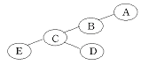
- A
- B
- C
- D
(정답률: 82%)
2과목: 전자 계산기 구조
21. 다음이 설명하고 있는 것은?
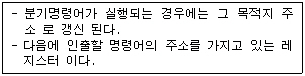
- 누산기
- 인덱스 레지스터
- MAR
- 프로그램 카운터
(정답률: 58%)
22. 10진수 12와 같지 않은 것은?
- 2진수 1100
- 5진수 22
- 8진수 14
- 16진수 8
(정답률: 69%)
23. Parity bit는 몇 개의 착오까지 검출이 가능한가?
- 3 bit
- 1 bit
- 2 bit
- 4 bit
(정답률: 46%)
24. 10진수 634를 BCD code로 표현 하였을 때 옳은 것은?
- 0110 0011 0100
- 0110 0011 0011
- 0011 0011 0100
- 0011 0011 0011
(정답률: 76%)
25. 십진수 6을 4bit excess-3 Gray 코드로 표현한 것은?
- 0110
- 1001
- 1100
- 1101
(정답률: 40%)
26. interrupt를 발생하는 모든 장치들을 직렬로 연결하여 우선순위를 결정하는 방식은?
- step by step 방식
- serial encoder 방식
- interrupt register 방식
- daisy-chain 방식
(정답률: 57%)
27. 레지스터의 내용을 메모리로 전달하는 기능은?
- Store
- Fetch
- Transfer
- Load
(정답률: 48%)
28. 컴퓨터의 fetch 사이클 시퀀스를 옳게 나타낸 것은?
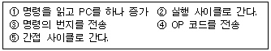
- ③→①→④→②→⑤
- ③→①→④→⑤→②
- ③→④→①→②→⑤
- ①→③→④→②→⑤
(정답률: 53%)
29. CAM(Content Addressable Memory)에 대한 설명 중 가장 옳지 않은 것은?
- 구성 요소 마스크 레지스터, 검색 자료 레지스터 등이 있다.
- 내용에 의하여 액세스 되는 메모리 장치이다.
- 데이터를 직렬 탐색하기에 알맞도록 되어 있다.
- 주소를 사용하지 않고 기억된 정보의 일부분을 이용하여 자료를 신속히 찾을 수 있다.
(정답률: 56%)
30. 다음()안에 들어갈 올바른 것은?
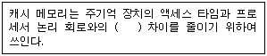
- 지연 시간
- 설정 시간
- 구조
- 속도
(정답률: 70%)
31. 데이터 전송 방식에 따른 I/O 설계 방식이 아닌 것은?
- DMA 방식의 I/O
- 인터럽트 방식의 I/O
- 프로그램 방식의 I/O
- 명령 사이클 방식의 I/O
(정답률: 30%)
32. 10진법의 데이터를 표현하기 위한 Packed나 Unpacked format의 일반적인 용도가 가장 올바르게 연결된 것은?
- Unpacked format - 10진수 입출력 형식, Packed format - 10진수 입출력 형식
- Unpacked format - 10진수 연산 형식, Packed format - 10진수 연산 형식
- Unpacked format - 10진수 입·출력 형식, Packed format - 10진수 연산형식
- Unpacked format - 10진수 연산 형식, Packed format - 10진수 입·출력 형식
(정답률: 52%)
33. 컴퓨터에서 수치 자료에 대한 부동소수점(floating point)표현 방식의 일반적인 형식의 순서로 사용되는 것은?
- 부호, 지수부, 가수부
- 부호, 가수부, 지수부
- 지수부, 부호, 가수부
- 가수부, 지수부, 부호
(정답률: 71%)
34. 다음 중 바이너리(binary) 연산자는?
- ROTATE
- COPLEMENT
- OR
- SHIFT
(정답률: 60%)
35. 한 명령의 execute cycle 중에 인터럽트 요청이 있어 인터럽트를 처리한 후 cpu가 다음에 수행하는 cycle은?
- fetch cycle
- indirect cycle
- execute cycle
- direct cycle
(정답률: 65%)
36. 다음이 설명하고 있는 것은?
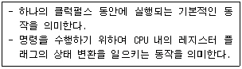
- Program Operation
- Fetch
- Count Operation
- Micro Operation
(정답률: 64%)
37. 다음 회로와 진리표를 갖는 가산기의 명칭은?
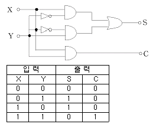
- Full Adder
- Half Adder
- Full Multiplexer
- Half Multiplexer
(정답률: 42%)
38. 스택(Stack)에 관한 설명 중 옳지 않은 것은?
- 역 폴리쉬형의 산술식을 처리하는데 효과적이다.
- 재귀적 프로그래밍에서 복귀 주소를 저장하는데 효과적이다.
- LIFO라고 부르기도 한다.
- 스택은 스택 포인터를 사용하므로써 1-주소 방식의 명령어 처리에 적합하다.
(정답률: 60%)
39. 다음 중 Addressing 방식이 아닌 것은?
- temporary addressing
- direct addressing
- immediate addressing
- indexed addressing
(정답률: 56%)
40. 주기억 장치의 성능을 좌우하는 요소가 아닌 것은?
- 기억용량
- 기억사이클 타임
- 기억액세스 폭
- 기억보호 기능
(정답률: 55%)
3과목: 시스템분석설계
41. 일정 시간 동안 수집된 변동 자료를 컴퓨터의 입력 자료로 만들었다가 필요한 시점에서 이 자료들을 입력하여 실행한 후 그 결과를 출력시켜 주는 방식의 시스템은?
- 일괄 처리 시스템
- 실시간 시스템
- 시분할 시스템
- 온라인 시스템
(정답률: 69%)
42. 코드화 대상 항목에 미리 공통의 특성에 따라서 임의의 크기를 블록으로 구분하여 각 블록 안에서 일련번호를 배정하는 코드는?
- 일련번호 코드(Sequence code)
- 구분코드(Block code)
- 합성코드(Combined code)
- 10진코드(Decimal code)
(정답률: 52%)
43. 색인순차 편성화일(indexed sequential file)의 각 구역 중 일정한 크기의 블록으로 블록화하여 처리할 킷값을 갖는 레코드가 어느 실린더 인덱스 상에 기록되어 있는가를 나타내는 정보가 수록된 구역은?
- 마스터 인덱스 구역
- 실린더 인덱스 구역
- 트랙 인덱스 구역
- 기본 데이터 구역
(정답률: 46%)
44. 입력 정보의 설계 순서로 옳은 것은?
- 입력 정보의 발생 - 입력 정보의 수집 - 입력 정보의 매체화 - 입력 정보의 투입
- 입력 정보의 발생 - 입력 정보의 수집 - 입력 정보의 투입 - 입력 정보의 매체화
- 입력 정보의 투입 - 입력 정보의 발생 - 입력 정보의 수집 - 입력 정보의 매체화
- 입력 정보의 발생 - 입력 정보의 투입 - 입력 정보의 매체화 - 입력 정보의 수집
(정답률: 65%)
45. 프로세스 설계시 유의할 사항으로 거리가 먼 것은?
- 오류에 대비한 체크 시스템을 고려한다.
- 신뢰성과 정확성을 고려한다.
- 시스템의 상태, 구성요소 및 기능 등을 종합적으로 표시한다.
- 각 부문별 담당자의 책임범위를 고려한다.
(정답률: 80%)
46. 코드 설계시 코드의 기능으로 적절하지 않은 것은?
- 확장성
- 편리성
- 연관성
- 중복성
(정답률: 67%)
47. 메모리 내부의 검사 및 주민등록증 검사를 하는데 사용된 방법으로서 체크 디지트를 부여한 코드와 컴퓨터로 계산된 체크 디지트 값과 일치하는가를 체크하는 검사 방법을 무엇이라고 하는가?
- Balance check
- Check digit check
- Batch total check
- Limit check
(정답률: 60%)
48. 마스터 파일(master file)안의 정보 변동에 의해 추가, 삭제, 교환을 하고 새로운 내용의 마스터 파일을 작성하는 것을 무엇이라 하는가?
- 병합(merge)
- 매칭(matching)
- 변환(conversion)
- 갱신(update)
(정답률: 77%)
49. 코드 “34278”를 “34578”과 같이 기록하는 것으로 디지트를 잘못 읽어 한 글자를 잘못 기록하는 오류는?
- 필사오류(transcription error)
- 전위오류(transposition error)
- 생략오류(missing error)
- 임의오류(random error)
(정답률: 71%)
50. 시스템 설계시 필요한 과정의 나열이 순서에 옳은 것은?
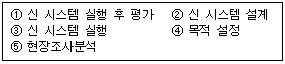
- ②→⑤→④→③→①
- ⑤→④→②→③→①
- ④→⑤→②→③→①
- ②→⑤→④→①→③
(정답률: 59%)
51. 코드 설계의 순서가 바르게 된 것은?
- 코드항목 결정 → 범위와 사용기간 설정 → 코드화 항목 특성 분석 → 코드설계 및 검사 → 코드표 작성
- 코드화 항목 특성 분석 → 코드항목 결정 → 범위와 사용기간 설정 → 코드설계 및 검사 → 코드표 작성
- 코드화 항목 특성 분석 → 코드항목 결정 → 범위와 사용기간 설정 → 코드표 작성 → 코드설계 및 검사
- 코드항목 결정 → 범위와 사용기간 설정 → 코드설계 및 검사 → 코드표 작성 → 코드화 항목 특성 분석
(정답률: 49%)
52. 다음의 소프트웨어 개발주기 모형에 대한 설명에 해당하는 것은?
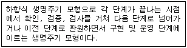
- 단계적 모형
- 폭포수 모형
- 구조적 모형
- 객체지향적 모형
(정답률: 57%)
53. HIPO에 대한 설명으로 옳지 않은 것은?
- IBM에서 개발하였다.
- 도식목차, 총괄도표, 상세도표로 전개된다.
- 설계와 문서화를 고루 만족시킨다.
- 상향식 개발을 지향한다.
(정답률: 68%)
54. 주로 편의점, 백화점 등 유통업체의 계산대에서 사용하는 장치로서 고객이 물품을 구입하게 되면 단말기에서 직접 입력하여 중앙 컴퓨터에 전달되어 현장 상황이 즉각적으로 반영되는 장치는?
- 디지타이저
- MICR(Magnetic Ink Character Reader)
- POS(Point Of Sale)
- 데이터 수집 장치
(정답률: 65%)
55. 다음 그림과 같이 길이가 같은 논리레코드들이 같은 수로 모여 블록을 형성한 형식으로 모든 물리레코드의 길이도 동일하며, 경제성이 높고 속도가 빠르며 프로그램 작성이 용이한 레코드(Record)의 형식은?
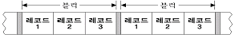
- 블록화 가변길이 레코드(blocking variable length record)
- 비블록화 가변길이 레코드(unblocking variable length record)
- 블록화 고정길이 레코드(blocking fixed length record)
- 비블록화 고정길이 레코드(unblocking fixed length record)
(정답률: 75%)
56. 객체지향 분석에서 객체 모형을 정의하는 절차(순서)가 옳은 것은?
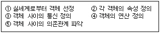
- ①-②-③-④-⑤
- ①-③-②-⑤-④
- ①-⑤-②-④-③
- ①-②-④-⑤-③
(정답률: 47%)
57. 기업의 측면에서 문서화를 통해 기대할 수 있는 효과와 가장 거리가 먼 것은?
- 의사소통을 원활히 할 수 있다.
- 생산성을 향상 시킬 수 있다.
- 정보를 축적할 수 있다.
- 시스템의 전체 개발 시간을 단축할 수 있다.
(정답률: 42%)
58. 데이터와 이 데이터를 조작하는 연산들이 하나의 모듈 내에서 결합되도록 하는 것은?
- 추상화
- 속성
- 메소드
- 캡슐화
(정답률: 66%)
59. 순차파일(sequential file)의 특징으로 거리가 먼 것은?
- 처리하는데 불편이 많아 이용도가 낮다.
- 데이터의 수록이 다른 파일에 비하여 어렵다.
- 데이터 검색시 시간이 많이 걸린다.
- 파일의 내용을 추가, 변경, 삭제하기가 매우 편리하다.
(정답률: 75%)
60. 모듈(module)의 독립성을 높이려면 결합도(coupling)와 응집도(cohesion)는 어떤 관계가 최적형인가?
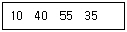
- 결합도는 최소, 응집도도 최소로 한다.
- 결합도는 최소로, 응집도는 최대로 한다.
- 결합도는 최대로, 응집도는 최소로 한다.
- 결합도는 최대, 응집도도 최대로 한다.
(정답률: 72%)
4과목: 운영체제
61. 분산 운영체제와 네트워크 운영체제의 설명으로 옳지 않은 것은?
- 분산 운영체제는 전체 시스템에 대하여 일관성 있는 설계가 가능하다.
- 네트워크 운영체제는 기존의 운영체제 위에 통신 기능을 추가한 것이다.
- 분산된 시스템 내에 하나의 운영체제가 존재할 때 이것을 네트워크 운영체제라 한다.
- 분산 운영체제에서는 네트워크로 연결된 각 노드들의 독자적인 운영체제가 배제된다.
(정답률: 27%)
62. 다음과 같은 트랙이 요청되어 큐에 도착하였다. 모든 트랙을 서비스하기 위하여 LOCK 스케줄링 기법이 사용되었을 때 모두 몇 트랙의 헤드 이동이 생기는가?(단, 현재 헤드의 위치는 50 트랙이고 헤드는 트랙 0 방향으로 움직이고 있다.)
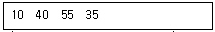
- 50
- 85
- 1⑤
- 110
(정답률: 40%)
63. 병렬처리의 주종(master/slave) 시스템에 대한 설명으로 옳지 않은 것은?
- 주프로세스는 연산만 수행하고 종프로세스는 입출력과 연산을 수행한다.
- 주프로세스만이 운영체제를 수행한다.
- 하나의 주프로세스와 나머지 종프로세스로 구성된다.
- 주프로세스의 고장시 전 시스템이 멈춘다.
(정답률: 65%)
64. 은행원 알고리즘(banker's algorithm)은 어느 경우에 사용하는가?
- 교착상태의 예방(deadlock reservation)
- 교착상태의 회피(deadlock avoidance)
- 교착상태의 발견(deadlock detection)
- 교착상태의 회복(recovery for deadlock)
(정답률: 60%)
65. 현재 헤드의 위치가 50에 있고, 요청 대기 열에는 아래와 같은 순서로 들어 있다고 가정할 때 FCFS(First Come First Served) 스케줄링 알고리즘에 의한 헤드의 총 이동 거리는 얼마인가?
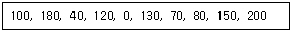
- 790
- 380
- 370
- 250
(정답률: 55%)
66. 세그먼트 기법의 설명으로 거리가 먼 것은?
- 세그먼트의 길이는 서로 다른 것이 일반적이다.
- 내부 단편화가 발생하지 않는다.
- 압축(compaction) 기법이 사용될 수 있다.
- 외부 단편화가 발생하지 않는다.
(정답률: 46%)
67. SJF(Shortest Job First) 스케줄링의 설명으로 옳지 않은 것은?
- 작업이 끝나기까지의 실행시간 추정치가 가장 작은 작업을 먼저 실행시킨다.
- 평균 대기 시간을 최소화한다.
- 선점 스케줄링 기법에 해당된다.
- FIFO 보다 평균 대기 시간이 작지만 긴 작업의 경우 FIFO 기법보다 더 크고 예측이 더욱 어렵다.
(정답률: 50%)
68. 운영체제의 목적으로 거리가 먼 것은?
- 시스템 성능 향상
- 처리량 향상
- 응답시간 증가
- 신뢰성 향상
(정답률: 77%)
69. 기억장치의 할당 전략에 대한 설명으로 옳은 것은?
- 최초(first) 적합 전략은 빈 공간을 찾기 위해 기억장치 전체를 조사해야 하는 단점이 있다.
- 최악(worst) 적합 전략은 입력된 작업을 가장 큰 공백에 배치한 후에도 종종 남은 공백이 여전히 큰 경우가 있기 때문에 상당히 큰 다른 프로그램을 수용할 수 있다는 장점이 있다.
- 최적(best) 적합 전략은 최초적합, 최적적합, 최악적합 전략 중 배치 결정을 가장 빨리 내릴 수 있는 장점이 있다.
- 최악(worst) 적합 전략의 경우 공간 리스트가 가장 큰 순서부터 크기 순으로 되어 있어도 전체 리스트를 검색해야 한다.
(정답률: 49%)
70. 디스크 스케줄링 기법 중 가장 안쪽과 가장 바깥쪽의 실린더에 대한 차별대우를 없앤 기법은?
- FCFS
- SSTF
- n-단계 SCAN
- C-SCAN
(정답률: 47%)
71. 로더의 기능에 해당되지 않는 것은?
- allocation
- linking
- relocation
- compile
(정답률: 56%)
72. 색인 순차 접근(Indexed Sequential Access) 방식의 구성 중 인덱스 영역(Index Area)애 해당하지 않는 것은?
- 마스터 인덱스(Master index)
- 섹터 인덱스(Sector index)
- 실린더 인덱스(Cylinder index)
- 트랙 인덱스(Track index)
(정답률: 64%)
73. UNIX에서 디스크 자체에 관련된 정보를 가지고 있는 블록은?
- 부트 블록
- 슈퍼 블록
- inode 블록
- 사용자 블록
(정답률: 22%)
74. 다음과 같은 작업에서 이를 SJF 정책으로 프로세스를 스케줄링하면 평균 반환시간(turnaround time)은 얼마나 되는가?
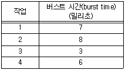
- 16 밀리초
- 6 밀리초
- 13 밀리초
- 17 밀리초
(정답률: 38%)
75. 잠재적 위협에 대처하고 그 위협을 제거하기 위한 보안의 목적과 거리가 먼 것은?
- 비밀성
- 유통성
- 가용성
- 무결성
(정답률: 61%)
76. 한 UNIX 파일의 보호 모드 값이 640(Octal)일 경우 소유자, 그룹, 다른 사용자들이 각각 실행할 수 있는 허가 사항으로 옳지 않은 것은?
- 소유자는 파일을 읽고 쓸 수 있다.
- 그룹내의 멤버들을 읽을 수만 있다.
- 어떤 사용자라도 실행할 수 있다.
- 그룹 외의 사용자는 읽지도 쓰지도 실행도 할 수 없다.
(정답률: 64%)
77. 한 작업이 CPU를 할당받으면 그 작업이 종료 될 때까지 다른 작업에서 CPU를 할당하지 못하는 스케줄링 기법에 해당하는 것으로만 짝지어진 것은?
- SRT, SJF
- SRT, HRN
- Round Robin, FIFO
- FIFO, SJF
(정답률: 56%)
78. 프로세스는 준비-실행-대기를 반복하면서 실행된다. 다음 중 실행상태에서 대기상태를 거치지 않고 바로 준비상태로 가는 경우에 해당하는 것은?
- 실행이 종료된 경우
- 입출력이 발생한 경우
- 시간 할당량이 초과된 경우
- 입출력이 종료된 경우
(정답률: 49%)
79. Process Control Block(PCB)의 내용이 아닌 것은?
- 프로세스의 현재 상태
- 프로세스 식별자
- 프로세스의 우선순위
- 페이지부재(page fault) 발생 회수
(정답률: 70%)
80. HRN(Highest Response-Ratio Next) 스케줄링 기법에서 가변적 우선 순위는 다음 식으로 계산된다. (ㄱ), (ㄴ)에 알맞은 내용은?
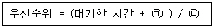
- (ㄱ) 서비스를 받을 시간 (ㄴ) 서비스를 받을 시간
- (ㄱ) 서비스를 받을 시간 (ㄴ) 실행된 시간
- (ㄱ) 실행된 시간 (ㄴ) 서비스를 받을 시간
- (ㄱ) 응답시간 (ㄴ) 서비스를 받을 시간
(정답률: 69%)
5과목: 정보통신개론
81. ITU-T에서 제안한 데이터통신에 관련된 표준안은?
- D시리즈와 E시리즈
- P시리즈와 Q시리즈
- V시리즈와 X시리즈
- R시리즈와 U시리즈
(정답률: 66%)
82. 통신 프로토콜의 기능과 그 기법을 서로 잘못 연결한 것은?
- 에러 제어 -ARQ
- 순서화 - 폴링/셀렉션
- 흐름 제어 - Sliding Window
- 동기 방식 - 비동기식/동기식 전송
(정답률: 41%)
83. 광의적인 정보통신의 의미를 가장 잘 표현한 것은?
- 컴퓨터와 통신회선의 결합으로 전송기능에 통신처리 기능이 추가된 데이터 통신을 말한다.
- 컴퓨터와 통신기술의 결합에 의하여 통신처리기능은 물론이고, 정보처리기능에 정보의 변환, 저장과정이 추가된 형태의 통신이다.
- 정보통신망을 이용하여 체계적인 정보의 전송을 위한 통신을 말한다.
- 멀티미디어에 의한 복합적인 통신을 말한다.
(정답률: 57%)
84. 다음 중 동기식 전송방식의 특징이 아닌 것은?
- 데이터 묶음의 앞쪽에 동기문자가 온다.
- 타이밍 신호는 모뎀, 터미널 등에 의해 공급된다.
- 전송속도가 보통2000[bps]를 넘지 않는 저속의 경우에 사용된다.
- 동기문자는 송신측과 수신측이 동기를 이루도록는 목적으로 사용된다.
(정답률: 63%)
85. 종합정보통신망이 제공하는 베어러 서비스에 해당되는 것은?
- G4 FAX
- TV 화상회의
- 비디오텍스
- 회선교환
(정답률: 38%)
86. LAN(Local Area Network)에서 CSMA/CD방식의 특징 중 옳지 않은 것은?
- IEEE 802.3의 표준규약이다.
- 버스형 근거리통신망에 일반적으로 이용된다.
- 트래픽 양이 증가 경우에도 안정된 동작을 한다.
- 일반적으로 지연시간을 예측할 수 없다.
(정답률: 47%)
87. 다음 중 디지털 전송의 특징이 아닌 것은?
- 신호대 잡음비가 나쁜 전송로에서도 원래의 신호 전송이 가능하며, 아날로그 전송보다 훨씬 적은 대역폭을 요구한다.
- 디지털 전송의 각 재생기는 잡음이 없는 새로운 펄스를 재생할 수 있어, 원래의 신호와 동일한 신호의 전달이 가능하다.
- 적당하게 재생기만 설치되면 장거리 전송이 용이하다.
- LSI, VLSI로 이어지는 기술의 진보로 더욱 발전된다.
(정답률: 38%)
88. 비패킷형 단말기들을 패킷교환망에 접속이 가능하도록 데이터를 패킷으로 조립하고, 수신측에서는 분해해주는 것은?
- PAD
- PMS
- PS
- NCC
(정답률: 48%)
89. 다음 중 LAN의 기본적인 회선망의 형태가 아닌 것은?
- 스타형
- 버스형
- 베이스밴드형
- 링형
(정답률: 69%)
90. 다음 중 미국의 군사용방공시스템으로 사용된 최초의 데이터 통신시스템은?
- ARPA
- CTSS
- SABRE
- SAGE
(정답률: 58%)
91. 다음 중 회선교환(Circuit Switching)방식의 특징에 해당하는 것은?
- 고정된 대역폭 전송방식이다.
- 전용선로가 없다.
- 패킷을 이용한 전송방식이다.
- 호출된 자국이 교신 중일 때 busy 신호가 없다.
(정답률: 46%)
92. 다음 중 동종의 네트워크(LAN)를 상호 연결하는데 사용되는 것은?
- 모뎀
- 서버
- PAD
- 브리지
(정답률: 59%)
93. 아날로그 컬러 TV 방송방식에 대한 국제표준규격이 아닌 것은?
- SECAM
- NTSC
- PAL
- HDTV
(정답률: 43%)
94. 다음 중 시분할 다중화에 대한 설명으로 옳은 것은?
- 대역폭의 이용도가 높아 고속 전송에 용이하다.
- 전송속도가 낮은 부 채널의 신호를 서로 다른 주파수 대역으로 변조한다.
- 비동기식 데이터만을 다중화 하는데 사용한다.
- 부 채널간의 상호 간섭을 방지하기 위해 완충지역으로 보호 대역이 필요하다.
(정답률: 25%)
95. 다음 중 프로토콜의 구성 요소가 아닌 것은?
- 구문(syntax)
- 의미(semantics)
- 순서(timing)
- 접속(connection)
(정답률: 60%)
96. 다음 중 전송속도에 대한 설명으로 틀린 것은?
- 보(baud)는 초당 발생한 신호의 변화 횟수를 말한다.
- bps는 초당 전송된 비트수를 말한다.
- 2비트가 한 신호단위인 경우 1200 bps는 2400 baud가 된다.
- 변조속도의 단위로 보(baud)를 사용한다.
(정답률: 39%)
97. 채널효율을 최대로 하기 위해 블록의 길이를 동적으로 변경할 수 있는 ARQ(Automatic Repeat Request) 방식은?
- 적응적(Adaptive) ARQ
- Stop-And-Wait ARQ
- 선택적(selective)ARQ
- Go-back-N 방식 ARQ
(정답률: 53%)
98. 다음 중 뉴미디어의 특징과 거리가 먼 것은?
- 고속성
- 상호작용성
- 쌍방향성
- 획일성
(정답률: 68%)
99. 인터넷에서 사용되고 있는 통신 프로토콜은?
- IEEE 802
- TCP/IP
- SNA
- 10 Base T
(정답률: 78%)
100. ISDN 채널의 종류와 전송속도의 관계를 나타낸 것으로 옳은 것은?
- B채널 : 64kbps
- D 채널 : 48kbps
- H0채널 : 1536kbps
- H11채널 : 384kbps
(정답률: 38%)
이유는 다음과 같다.
- UPDATE: 데이터를 수정하는 SQL 명령어이다.
- 학생: 수정할 테이블 이름이다.
- SET: 수정할 열(column)과 값을 지정하는 SQL 키워드이다.
- 학년=3: 학년 열의 값을 3으로 수정한다.
- WHERE: 조건을 지정하는 SQL 키워드이다.
- 학번=300: 학번이 300인 학생을 찾아서 조건을 만족하는 행(row)의 값을 수정한다.